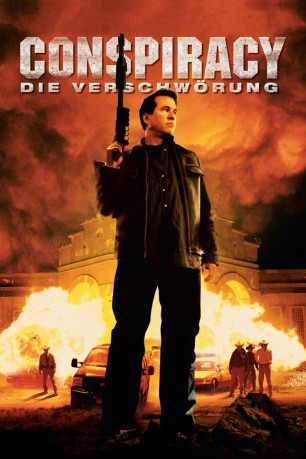
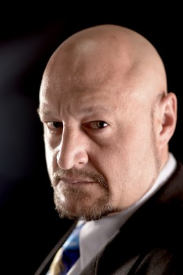

#11647 Conspiracy - Die Verschwörung
Alternativ: Conspiracy (Englischer Titel)
 
 IMDB-Wertung: 4.6 / 10
IMDB-Wertung: 4.6 / 10  Metascore: 0
Metascore: 0 
Im Golfkrieg hat MacPherson nicht nur ein Bein, sondern auch so ziemlich den Antrieb fürs Leben verloren. Jetzt ereilt den Veteranen der Hilferuf eines alten Kameraden aus einem Weiler nahe der mexikanischen Grenze. Als MacPherson nach dem rechten sieht, findet er das Land des Freundes zur Mondlandschaft verwandelt, der Kumpel selbst ist verschwunden. Verantwortlich scheint Rhodes zu sein, Statthalter einer Sicherheitsfirma und größter Landbesitzer der Gegend. MacPherson lässt sich nicht einschüchtern.
Jahr: 2008
Dauer: 86 Minuten
FSK: 18
Land: USA Studio: My Network TVTonspuren:
Untertitel:
Auflösung: SD (608x320) Größe: 700 MB
Genre: Action, Thriller, Drama, Krieg, Mystery
Regisseur:  Adam Marcus
Adam Marcus
Drehbuch: Adam Marcus, Debra Sullivan
Soundtrack: Sujin Nam
Darsteller:
 Val Kilmer als MacPherson
Val Kilmer als MacPherson Gary Cole als Rhodes
Gary Cole als Rhodes Jennifer Esposito als Joanna
Jennifer Esposito als Joanna Jay Jablonski als Deputy Foster
Jay Jablonski als Deputy Foster Greg Serano als Miguel
Greg Serano als Miguel Christopher Gehrman als E.B.
Christopher Gehrman als E.B. Bob Rumnock als Bock
Bob Rumnock als Bock- Scott Burkett als Deputy Jefferson
- Rene Mousseux als Deputy Lee
- David Frye als Deputy Jenson
- Jeannine Cota als Lucinda
- Debra Sullivan als Susie the Waitress
- Steve Pena als Francisco
- John Kelly als Foreman
- Anders Hasselblad als Old Man
- Darren Dupree Washington als Grunt #1
- Jude B. Lanston als Sergeant
- Timothy D. Harris als Medic
- Anna Osceola als Girl #1
- Vivan Dugré als Nurse Duncan
- Keith Johnson als Cowboy #5
- Francheska Bardacke als Pretty girl (uncredited)
- Joe Manuel Gallegos Jr. als Iraq Combat Marine (uncredited)
-  Chris Ranney als Cowboy Shot in the Head (uncredited)
 J. Nathan Simmons als Victor's Friend (uncredited)
J. Nathan Simmons als Victor's Friend (uncredited)- Girard Swan als Marine First Lieutenant (uncredited)
 Z. Ray Wakeman als Border Cowboy (uncredited)
Z. Ray Wakeman als Border Cowboy (uncredited)- Tyler Williams als Marine Corporal (uncredited)
- Stacy Marie Warden als Carly
- Adam Marcus als Terry
- Anthony Jordan Atler als Reinol
 J.D. Garfield als Victor
J.D. Garfield als Victor- Fredrick Lopez als Mexican Man
- Keanu Briones als Juan Miguel
- Sigfrido Salazar als Ramone
- Freddy John James als Grunt #2
- Scott Maguire als Marine
- Joseph Tuccio als Iraqi Soldier
- Reynaldo Cantu als General Abu al-Rawis
- Alesia Riabenkova als Beautiful Woman
- Justin Ocksrider als Boy #1
- Michelle Renee Allaire als Blonde Woman
- Tone Forrest als Beggar
- Chad Henderson als Border Cowboy #1
- Michael Linstroth als Border Cowboy #2
- Robert Cain als Rhodes's Bodyguard
- Don Battle als Marine (uncredited)
- Norm Lee als Border Cowboy (uncredited)
- Brian Lorelle als Cowboy (uncredited)
- Daniel Thomas Murphy als Bad Cowboy (uncredited)
Datei: X:\NEU\Conspiracy - Die Verschwörung (2008, FSK18, 608x320).avi seit 13.08.2019
 Es gibt insgesamt 187 Filme in der Gruppe 'NEU'
Es gibt insgesamt 187 Filme in der Gruppe 'NEU'